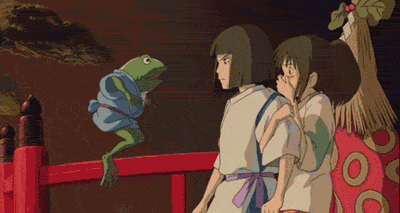
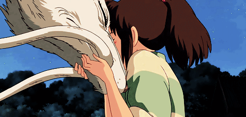
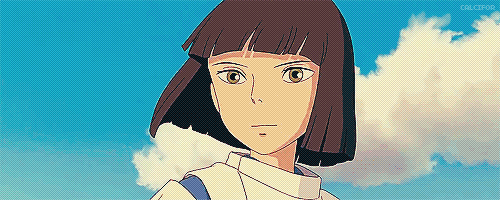

Хаку

Хаку / Нигихаями Кохакунуси (яп. ハク / ニギハヤミコハクヌシ Хаку / Нигихаями Кохакунуси) (сэйю: Мию Ирино) — дракон и мальчик, имя которого переводится как «хозяин янтарной реки». Он появился «неожиданно и непонятно откуда», как и Тихиро (по словам дедушки Камадзи), явился к Юбабе и захотел обучаться колдовству. Она сделала его своим учеником. Дедушка Камадзи пытался отговорить Хаку, но тот твёрдо стоял на своём и со временем стал правой рукой колдуньи Юбабы. После встречи с Тихиро, Хаку помогает ей в её начинаниях. Вскоре Хаку понимает, что встреча с Тихиро постепенно меняет его и напоминает о том, каким он был, и почему он здесь. Память, которую забрала Юбаба вместе с его именем, возвращается, и он вспоминает, что однажды спас Тихиро.

На самом деле Хаку не человек, а дракон, хранитель реки в человеческом облике. Когда-то в мире людей Тихиро упала в реку, пытаясь поймать упавшую туфельку, и могла утонуть, если бы не Хаку, который как раз и обитал в этой реке. Позже эту реку засыпали и построили на её месте дома. Дракон отправился к Юбабе, чтобы стать её учеником, так как ему некуда было больше идти.

Когда Тихиро летит на Драконе от Дзэнибы, она вспоминает этот момент из детства и реку, которая называлась Кохакугава (яп. 琥珀川, янтарная речка). Хаку тоже вспоминает эту встречу и своё имя, что позволит ему в будущем вернуться в мир людей. Он помог Тихиро-Сэн выбраться из мира духов и вернуть родителей.